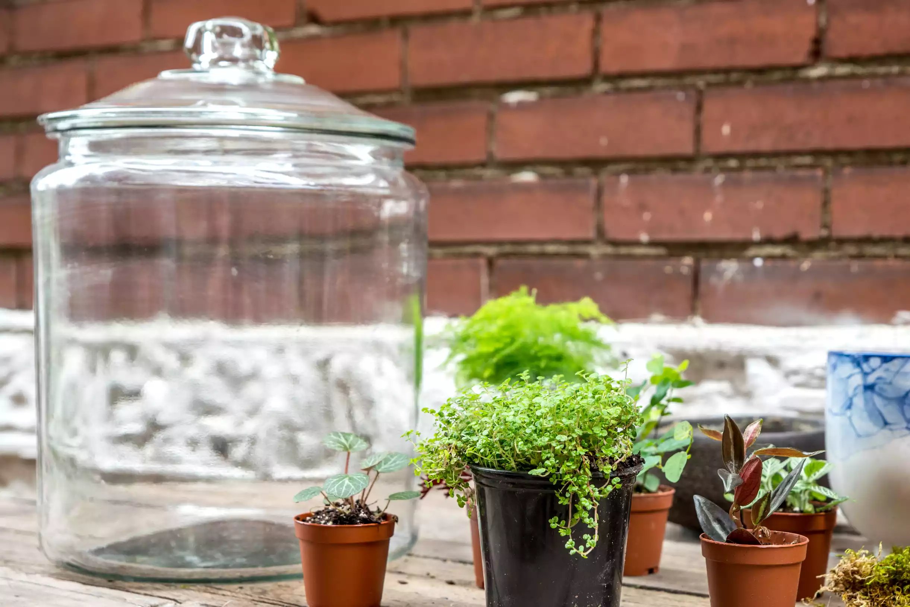
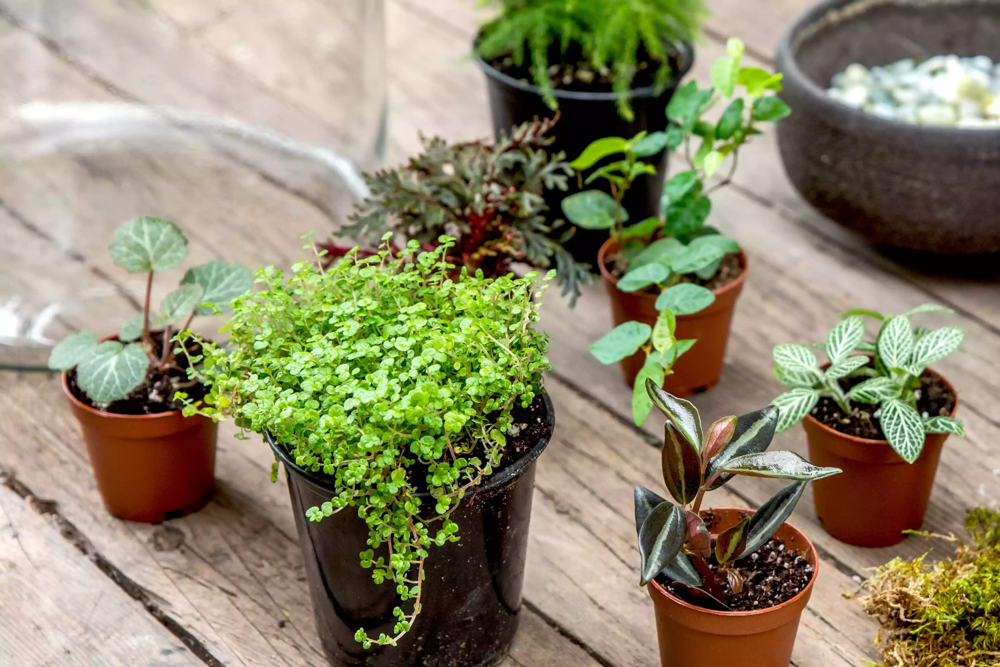
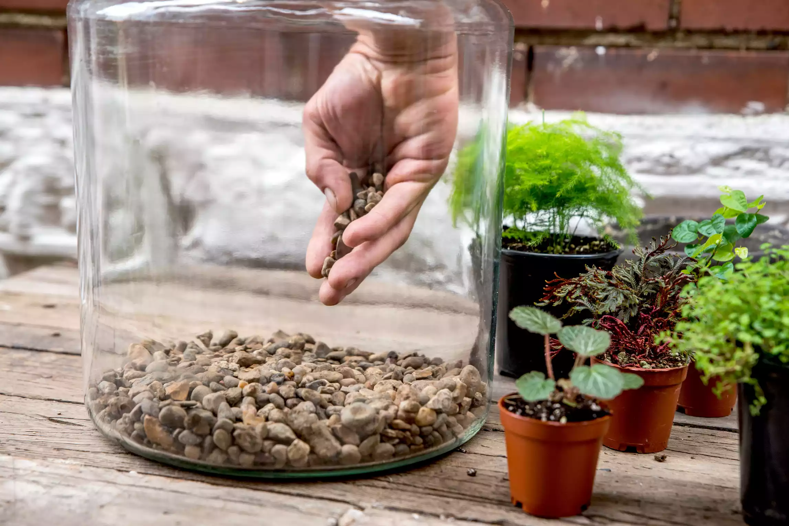
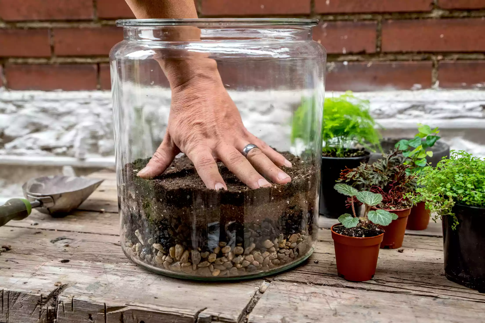
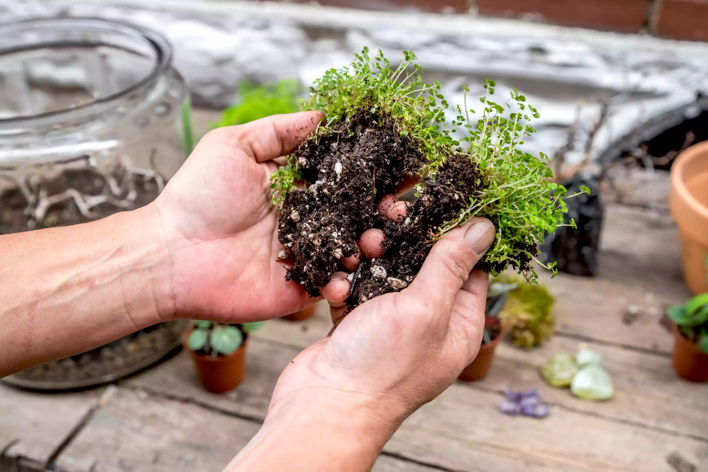
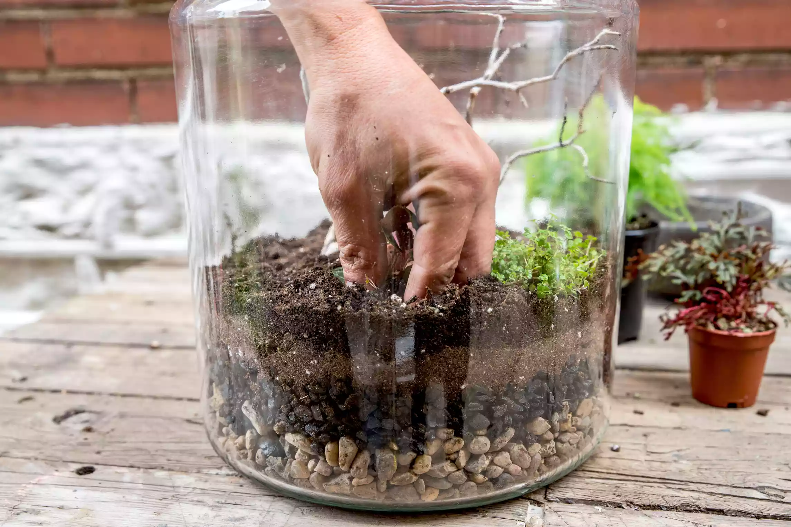
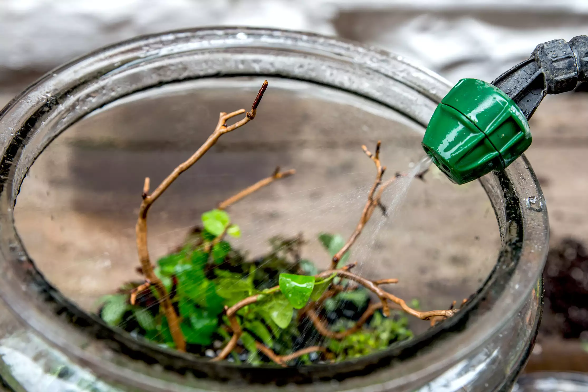
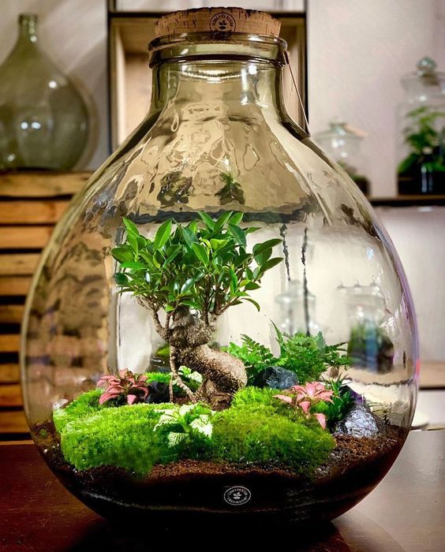

A terrarium, sometimes referred to as a garden under glass, makes a wonderful and impressive gift, even for people who consider themselves plant-challenged. A terrarium is an indoor gardening container, usually made of glass, that is fully or partially enclosed to allow heat and light to enter and confine moisture. Terrariums can be entirely closed but often they are left partially open to allow airflow. You can make a basic terrarium in less than an hour with very few inexpensive materials. Glass containers, small jars, and even goldfish bowls make beautiful terrariums and miniature terrarium plants might only cost a few dollars each.
What you 'll need:
- Large spoon or garden trowel
- Small garden snips or scissors for trimming plant roots
- Spray bottle for water
- Container with no drainage holes, with or without a top
- Clean aquarium gravel or small crushed stone
- Activated charcoal (found at a nursery or pet supply store)
- Terrarium plants
- Sterile potting mix
- Sheet moss
- Decorative elements (optional)
Instructions
1. Choose a container
Choosing your container and plants is half the fun of making a terrarium. There are many specialized terrarium containers that you can buy, even those that look like miniature Victorian greenhouses or conservatories that sell for hundreds of dollars. But, you can use almost any transparent (glass or plastic) container with a wide mouth (with or without a lid) to create a terrarium. Suitable containers include aquariums, gold fish bowls, wardian cases, cold frames, bell jars, tureens, apothecary jars, cloches, mason jars, glass cookie jars, and even large brandy snifters. A wide opening allows you to fit your hand into the container to add drainage material, soil, plants, and decorative elements (shells, figurines, or ornaments).
2. Choose the plants
Most garden centers stock miniature plants for terrariums, sometimes in the section of the store containing fairy garden accessories. Choose terrarium plants with various foliage forms and heights that are small enough to fit in your container, preferably without touching the sides of the terrarium. Larger terrariums can handle houseplants that are somewhat larger but avoid fast-growing species or those that develop large leaves that will block light from smaller plants. When considering terrarium plants, look for plants that thrive in low to medium light. For visual appeal, choose a mix of leaf sizes, texture, and color. Select plants that won't mind the naturally humid environment of a terrarium. Avoid cactus and succulents in an enclosed terrarium—those plants work best in fully open containers filled with a potting mix containing plenty of coarse sand.
3. Add Drainage Layers
A terrarium container does not have drainage holes, so you’ll need to create a drainage layer to keep water away from plant roots.Start with a 2-inch layer of gravel or crushed stone in the bottom of the terrarium. A tall, narrow terrarium will require a deeper layer of drainage stones than a broad, shallow container. Next, use a large spoon or trowel to add a 1/4-inch to a 1/2-inch layer of activated charcoal on top of the stones to help with drainage and control any odors.
4. Add Moss and Potting Mix
Next, add a layer of sheet moss over the stones and charcoal to keep to next layer, the potting soil, from mixing in. The moss also adds visual interest to your terrarium. With a large spoon or small trowel, add slightly damp, sterile potting soil on top of the moss. Do not use a plotting soil mix with fertilizer already incorporated; terrarium plants don't need the extra fertilizer. Add as much potting mix as you can—at least a couple of inches. Make sure to keep the soil level low enough so that the plants will fit inside the container with room to grow but without touching the top of a closed terrarium.
5. Prepare the Plants
Remove the plants from their nursery pots. If a plant is root bound, tease the roots apart or use a pair of small garden ships to trim off some of the longer roots. Removing some roots, called root pruning, will retard a plant’s growth, which is essential when growing plants in the confines of a terrarium. Also, trim off any yellowed or damaged leaves.
6. Add Plants to the Terrarium
Shake off any excess soil left on the plants. Use a long spoon or your fingers to dig a planting hole for each plant. Place each plant in its hole and gently pat the soil down to eliminate air pockets and secure each plant firmly in the potting medium.
7. Water the Terrarium
Use a spray bottle or small watering can with a rose attachment on its spout to water the plants so they are just damp, but not soaking wet. Use the spray bottle to clean off any dirt clinging to the glass sides of your container, which you can then wipe clean with newspaper or a paper towel.
8. Maintain the Terrarium
It's easy to maintain a terrarium. Perform these three tasks every few weeks: Feel the soil to see if it's dry and needs water. Partially and fully enclosed terrariums retain water considerably longer than most potted houseplants. Inspect a closed terrarium for condensation. Take off the top at least once a month to increase airflow. Leave the top off until the condensation disappears. Also take off the terrarium top if you added too much water. Remove yellowing or damaged leaves and prune plants to a smaller size if they're growing too large for the container